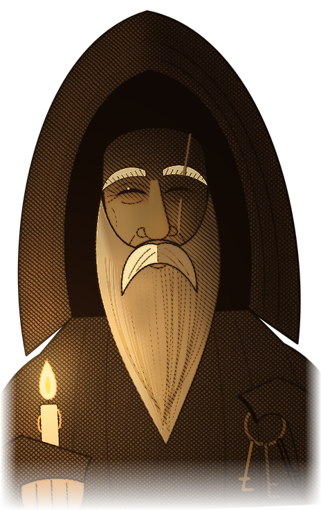

성경 서고 · 장면 스케치
사서가 말을 걸고, 나는 선택지로 답합니다. 대사는 모두 초안입니다. 그림은 지금 앱의 서고 그림 위에 얹어 본 것입니다.
1
들어섬 — 나의 혼잣말
처음 들어올 때만 나옵니다. 화면을 누르면 다음 말로 넘어갑니다.
나
오래된 서고다. 촛불 몇 개만 켜져 있다.
누르면 다음 ▾
2
사서가 말을 건다 — 두 선택지
사서는 말수가 적습니다. 한두 문장만 하고 기다립니다.

안내를 받아 이동한다
자유롭게 둘러본다
사서
…어서 오십시오.
찾는 책이 있습니까?
3
안내를 받아 이동한다
오늘 읽는 책 앞까지 사서가 데려갑니다. 걸어가는 움직임은 지금 것을 씁니다.
펼쳐 본다
도로 꽂는다
사서
오늘 읽으실 책입니다.
로마서, 열여섯 장입니다.
4
자유롭게 둘러본다
지금 화면과 같습니다. 사서는 구석에서 기다리고, 누르면 다시 말을 겁니다.
외경 · 위경 · 교부 문헌
구약
서른아홉 권
신약
스물일곱 권
사서 부르기
나
양쪽으로 서가가 늘어서 있다. 맨 끝은 불에 그을렸다.
5
그을린 끝 — 사서가 막아선다
여기서만 사서가 먼저 나섭니다. 까맣게 탄 열쇠는 이 사람이 쥐고 있습니다.
경고
이 서고의 책은 성경이 아닙니다.
정말로 열람하시겠습니까?
돌아간다
열람한다
사서
…그쪽은, 성경이 아닙니다.
6
열람한다 — 나의 혼잣말
오늘 고친 것입니다. 사서는 따라오지 않습니다.
나
아직 들여놓은 책이 없는 것 같다.
누르면 돌아감 ▾
7
책을 읽고 — 사서의 다섯 물음
지금 있는 다섯 물음과 인장을 대화 틀로 옮깁니다.
‹ 로마서 · 9 / 14
왜 썼습니까
로마서
(책의 '목적' 쪽이 여기 펼쳐져 있습니다. 읽고 나서 내 말로 답합니다.)
누가
언제
왜
구조
하나님
내 말로 답한다
책에서 다시 찾아본다
사서
셋째 물음입니다.
이 편지를 왜 썼습니까?
8
다시 왔을 때 · 나갈 때
둘째 방문부터는 한 줄과 선택지만 나옵니다. 길게 붙잡지 않습니다.
이어서 본다
오늘 읽는 책으로
둘러본다
사서
…다시 오셨군요.
로마서에 인장 둘이 남아 있습니다.
※ 사서 그림과 대사는 방향을 보시라고 그린 초안입니다. 정해 주시면 다듬어서 앱에 넣습니다.